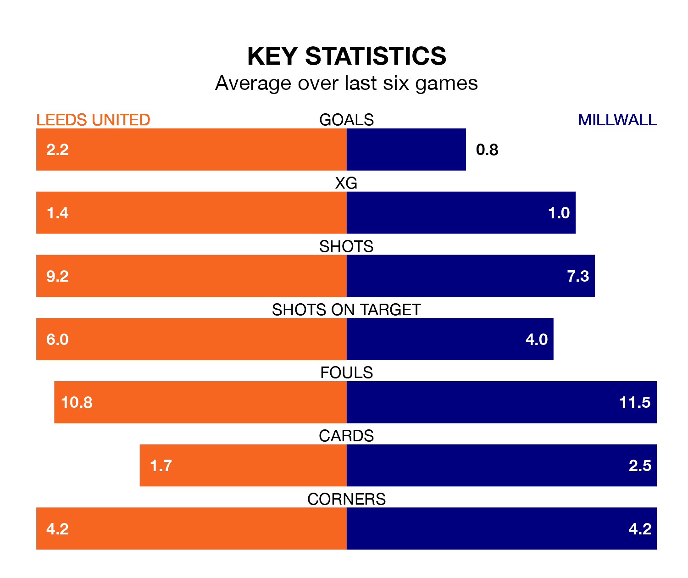

Leeds United are heavy favourites to keep all three points at home in Sunday's kick-off against Millwall.
Leeds, who sit second in EFL Championship with 37 games played, are priced at 1.3 to seal victory at Elland Road.
Sitting 13 places and 36 points behind them in the table, Millwall are 7.4 to win with *Betting Company*, while the draw is at 4.8.
With 68 goals in 37 games so far this season, Leeds are scoring more than average in the league with 1.8 goals per game. And they are conceding fewer than average, letting in 28 goals at a rate of 0.8 per game.
Millwall, meanwhile, are below average scorers, with 1.0 goal per game, compared to a league average of 1.4. They have conceded 1.3 goals per game.
With Illan Meslier between the sticks, United can rely on one of the league's safest pair of hands. He has kept 16 clean sheets in his 35 appearances this season, and no 'keeper has prevented the opposition scoring more often in EFL Championship.
In the Lions's net, Matija Šarkić has eight clean sheets in 23 games. He has conceded a goal every 90 minutes, 50% more often than the 135 minutes between goals for Meslier.
The home side are in fantastic form in EFL Championship, with five wins and a draw from their last six games.
With three wins and a draw over that period, the visitors' form is much worse – they have taken 10 points from 18, compared to Leeds's 16.
In the last 10 years, Leeds and Millwall have played each other on 10 occasions. Leeds won five of them, Millwall four, and they drew once.
On average, Leeds scored 1.7 goals and the Lions 1.5 in those matches.
Their last meeting was on September 17, when Leeds won 3-0 away.
Leeds's last match was on March 8, a 2-0 win against Sheffield Wednesday, with Patrick Bamford and Wilfried Gnonto getting the goals for Leeds.
Millwall beat Birmingham City 1-0 last time out, on March 9, with Japhet Tanganga on the scoresheet.
Updated: 15:10 (UTC), 15/03/24